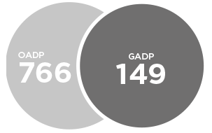

Nurturing Future Leaders
Axiata’s talent development engine is on track to deliver a pool of strong and well-equipped leaders with the appropriate skills to ensure they deliver performance and in turn, contribute positively to the development and economic progress in their countries and communities. Led by the Axiata talent development programme, employees are offered numerous world-class training programmes regularly. The average no. of training hours per employee in 2014 was 15.1.
Talent Development and Unlocking PotentialThe Axiata Talent Development Programme which includes a joint programme with INSEAD (facilitated by INSEAD at its campus in Singapore); a Telco mini-MBA programme; a ‘War Game’; and the ‘x-Venture’ business simulation programme, amongst others, continued to strengthen and groom our employees in 2014. The Axiata Group and OpCo Accelerated Programmes (GADP and OADP) are programmes designed to enable high performers and high potential employees to grow their careers within the group at an accelerated pace.
In 2014, the Group’s talent management team focused on ensuring that the talents continue to drive their career development initiatives which the talents actively chart out and at the same time supporting the talents’ efforts by increasing accountability for development among their line managers. This focus was made to address a key lever that the Group feels can significantly accelerate talents’ development via the shared focus on development among both talents and their respective line managers. Specific engagement and training programmes were conducted to facilitate this initiative in the Talent Management Programme.
Last year a new process was also introduced to facilitate the transition of top management into new roles at the CXO level. This includes a transition plan covering the first 100 days for each CXO level movement. The transition plans identifies the anticipated key challenges for the role and the key factors for consideration during the CXO’s first 100 days. Axiata Group filled 81% of its senior level positions from within the group in 2014.
Additionally, the Group and OpCo Accelerated Development Programmes were strengthened in 2014 with the introduction of the following initiatives
- Self-development workshops which focused on linking talents to the critical issues and needs of the business
- Improved talent assessment criteria and methodology based on the Group’s talent analytics
- Creating an in-house talent database for better accessibility of talent related information.
- Updates to existing development programmes to focus on the new areas of the business i.e., in Digital Services, including new programmes to strengthen functional and leadership competencies.
Accelerated Development Programme
SLR 6 million spent